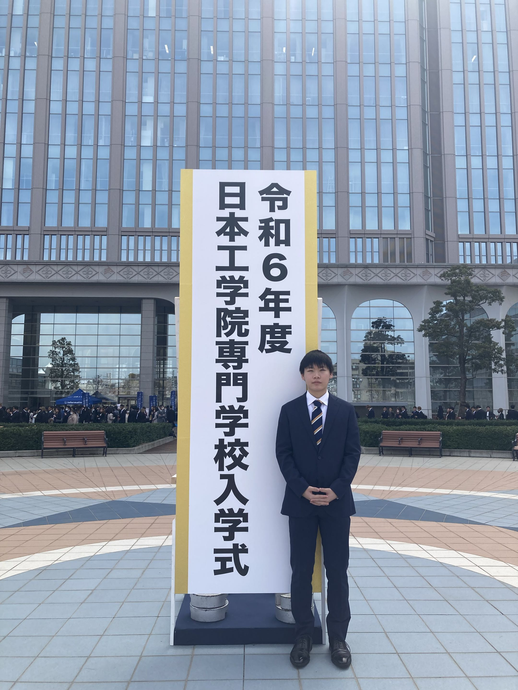

PROFILE

自己紹介
日本工学院専門学校蒲田 ゲームクリエイター科四年制の 濱田和哉 です。
2028年卒業予定です。
リアルタイム描画や物理演算領域に関心があり、現在は特に「髪の毛をリアルに描写・演算すること」を中心としたプログラミングの
研究・開発に取り組んでいます。
趣味・特技
- VTuber・推し活: 主にホロライブ所属（白上フブキ推し）のライブ配信視聴（約3年間）
- バスケットボール: 中学・高校で約6年間活動
技術スキル概要
- 使用可能言語: C, C++, C#
- 開発環境 / エンジン: 自作エンジン (DirectX12), Unity, Unreal Engine
- 使用ツール: Git/GitHub, Visual Studio, Blender, Aseprite, GIMP, FireAlpaca
RESUME
SUMMARY / 概要
日本工学院専門学校蒲田 ゲームクリエイター科四年制に在学中のゲームプログラマーです。自作DirectX12エンジンを用いたリアルタイム描画（レイトレーシング、Marschnerヘアモデル）およびStrandHair物理演算、SDF・GJK-EPAを用いた高精度な衝突判定の実装などをしました。
EDUCATION / 学歴
2012年4月 - 2018年3月
武蔵野市立大野田小学校
2018年4月 - 2021年3月
武蔵野市立第四中学校
2021年4月 - 2024年3月
都立石神井高等学校
2024年4月 - 2028年3月 (卒業予定)
日本工学院専門学校蒲田
ゲームクリエイター科四年制
TECHNICAL SKILLS / 技術スタック
プログラミング言語
- C / C++: メイン言語（自作エンジン・ゲームロジック）
- HLSL: シェーダー開発, RayTracing
- C#: Unity / ツール開発
グラフィックス & 物理演算
- DirectX12: 自作エンジン構築
- 描画技術: RayTracing
- 物理・判定: Strand Hair, SDF, GJK-EPA
開発環境 & ツール
- 開発環境: Visual Studio, Unity, Unreal Engine
- グラフィックツール: Blender, Aseprite, GIMP
- バージョン管理/解析: Git/GitHub, PIX
PROJECT HIGHLIGHTS / 主要制作実績
- 【就職作品】 Hair Demo: DirectX12自作エンジンでのStrandHairリアルタイム物理演算＆レイトレーシング描画（個人制作）
- 【チーム制作】 全10作品: UIアニメーションエディタ自作、GJK-EPA衝突判定、カメラ制御等（役割: エンジン/UI/物理/プレイヤー）
- 【個人制作】 全3作品: 2D謎解きゲーム『エボルシオン』『Mirror』『Mirror 2』
趣味について詳しく
- Vtuber: 約3年前に好きになってから今まで見ていない配信はないほど一途です。声や見た目などの癒しとしての要素を持ちつつ、自分が普段触れないエンタメに間接的に触れられたりと気楽に楽しめるコンテンツとしてとても面白いと思っています
- バスケ: 激しい攻守の切り替わりのテンポの良さや大きな声をあげてチーム全体でチームを鼓舞する雰囲気、コミュニケーションによりカバーのしあいなどがとても楽しいです。体力と忍耐力には自身があり、当時1500ｍで4:59を出しました。
WORKS
専門学校で制作した全14作品（就職作品、チーム作品10作、個人作品3作）の一覧です。
個人制作DirectX12 (自作エンジン)
就職作品 (Hair Demo)
DirectX12自作エンジンにて、StrandHairを用いた髪のリアルタイム物理演算とRayTracing/Marschnerモデルによる描画を追求した作品です。
チーム制作 (全10作品)C++ / DirectX12 / 学内エンジン
チーム制作作品一覧 (全10作品)
チームで制作した全10作品です。動画プレビューから各作品の詳細ページへ移動できます。
個人制作 (全3作品)開発の原点
個人制作作品 (全3作品)
入学初期から夏休みを利用して個人で制作した作品群です。動画付きで1ページにまとめて掲載しています。
就職作品 詳細
Hair Demo
■ ステータス・開発環境
- ジャンル: 3Dアクションゲーム（実装予定）
- 開発期間: 3ヶ月（制作中） | 人数: 1人 (個人)
- 環境・言語: C++ / DirectX12 (自作エンジン)
■ 主な技術的特徴
- StrandHair: 一本一本の髪の毛に対する疑似物理演算を採用。
- RayTracing & Marschnerモデル: レイトレーシングに加え髪の光沢表現を再現。
- SDF (Signed Distance Field): 髪の突き抜けを防止する当たり判定の構築。
TEAM WORKS
カード全体またはボタンをクリックすることで各作品の詳細情報と画像ギャラリーを確認できます。
2Dパズル2年冬 (2ヶ月)3人
1. 独りぼっちの友達ごっこ
UIアニメーションエディタを自作し、作業効率と表現力を大幅向上させた2Dパズルゲーム。
2Dアクション2年冬 (4ヶ月)4人
2. 雨宿り
「GJK-EPA」による精密当たり判定とコヨーテタイムで快適な操作性を追求したアクション。
3Dアクション2年秋 (1ヶ月)3人
3. ボインボインボンバー
攻撃判定の非対称調整や敵同士のフレンドリーファイアで爽快感と納得感を両立。
2Dアクション2年夏~秋 (1ヶ月)3人
4. 跳弾
空中静止中の回転動作と判定猶予の綿密な調整で良好なゲームテンポを実現。
2Dアクション2年夏 (10日)3人
5. エゴノワール
親座標系への組み込みと変換行列計算により、ブロック潜伏・離脱時の滑らかな空間遷移を実現。
2Dアクション1年秋 (1ヶ月)3人
6. 影縛りの糸
プレイヤーとボスの自働中間カメラ追従制御により、視認性を高く保ち戦況把握をスムーズ化。
2Dパズル1年冬 (2ヶ月)3人
7. くるくるレイヤー
「回転」コンセプトをUI全般やロゴモーション、シームレス遷移にまで昇華させた世界観設計。
2Dアクション1年冬 (2ヶ月)3人
8. 1key 当千
移動・攻撃・選択のすべてをSPACEキー1つで完結させた直感的操作システム。
2Dアクション1年夏 (10日)3人
9. スモグリン
実在の潜水艦コックピットを模したUIとテクスチャ書き分けにより高い操縦没入感を演出。
2Dパズルアクション3年夏 (10日)3人
10. ぷにぷろ
個人制作のUIシステムを新規エンジンへ移植。Jsonによるアニメーション遷移やイベント制御を拡張実装。
独りぼっちの友達ごっこ
■ 開発環境・担当
- ジャンル: 2Dパズルゲーム | 開発期間: 2ヶ月 (2年冬)
- 人数: 3人 | 環境: C++ / DirectX12
- 担当役割: エンジン、UI
■ アピールポイント
UIアニメーションエディタを自作し、自由な配置や再帰的な親子付けに対応したシステムを作成しました。これにより、複雑で表現力の高いUIを効率的に実装可能にし、制作工数の削減とUIクオリティの大幅な向上を実現させました。
■ スクリーンショット (4枚)
雨宿り
■ 開発環境・担当
- ジャンル: 2Dアクションゲーム | 開発期間: 4ヶ月 (2年冬)
- 人数: 4人 | 環境: C++ / DirectX12
- 担当役割: Player関係の作成、当たり判定
■ アピールポイント
どんな地形でも動けたほうが楽しいと思い、精密な当たり判定を行える「GJK-EPA」を導入。複雑な地形でも破綻しない判定を構築しました。また、坂を下る際の微小な浮遊による入力の不具合を防ぐため「コヨーテタイム」を実装し、意図通りの手触りを再現しました。
■ スクリーンショット (4枚)
ボインボインボンバー
■ 開発環境・担当
- ジャンル: 3Dアクションゲーム | 開発期間: 1ヶ月 (2年秋)
- 人数: 3人 | 環境: C++ / DirectX12
- 担当役割: プレイヤー、雑魚敵
■ アピールポイント
プレイヤーの近接攻撃は見た目より判定を広く、敵の攻撃は狭く調整することで理不尽な被弾感をなくしました。また、敵の攻撃が他の敵にも命中する設計にすることで、説得力と違和感のないアクションを実現しました。
■ スクリーンショット (4枚)
跳弾
■ 開発環境・担当
- ジャンル: 2Dアクションゲーム | 開発期間: 1ヶ月 (2年夏~秋)
- 人数: 3人 | 環境: C++ / DirectX12
- 担当役割: エンジン、操作性の調整
■ アピールポイント
空中静止中の回転動作は「1周半」の猶予を持たせることで余計な連続入力を不要にし、誰でも狙えるがテンポを損なわない絶妙な速度に調整。ゲーム全体の心地よいフローを追求しました。
■ スクリーンショット (4枚)
エゴノワール
■ 開発環境・担当
- ジャンル: 2Dアクションゲーム | 開発期間: 10日 (2年夏)
- 人数: 3人 | 環境: C++ / DirectX12
- 担当役割: 敵のModel、Playerの挙動
■ アピールポイント
潜伏時にはキャラクターをブロックの親座標系へ組み込み、離脱時には変換行列から正確なワールド座標を算出・引き継ぐ処理を構築。親子関係の着脱時にも位置飛びを起こさずスムーズな空間遷移を実現しました。
■ スクリーンショット (4枚)
影縛りの糸
■ 開発環境・担当
- ジャンル: 2Dアクションゲーム | 開発期間: 1ヶ月 (1年秋)
- 人数: 3人 | 環境: C++ / 学内製エンジン
- 担当役割: カメラ、紐、演出
■ アピールポイント
画面外からの被弾による不快感をなくすため、プレイヤーとボスの双方が常にフレーム内に収まるよう注視点を中間地点ヘリアルタイム追従させる制御を実装。戦況を把握できる高い視認性を確保しました。
■ スクリーンショット (4枚)
くるくるレイヤー
■ 開発環境・担当
- ジャンル: 2Dパズルゲーム | 開発期間: 2ヶ月 (1年冬)
- 人数: 3人 | 環境: C++ / 学内製エンジン
- 担当役割: タイトル、セレクト画面
■ アピールポイント
「回転」というコンセプトをUI挙動やロゴモーションにも反映させ、タイトルからシームレスにゲームへ繋げる設計により、起動した瞬間からの没入感と視認性を高めました。
■ スクリーンショット (4枚)
1key 当千
■ 開発環境・担当
- ジャンル: 2Dアクションゲーム | 開発期間: 2ヶ月 (1年冬)
- 人数: 3人 | 環境: C++ / 学内製エンジン
- 担当役割: Texture、システム考案
■ アピールポイント
誰でも直感的に楽しめるよう、移動・攻撃・エリア選択などの主要アクションすべてを「SPACEキー1つ」で完結できるようシステムを設計・調整しました。
■ スクリーンショット (4枚)
スモグリン
■ 開発環境・担当
- ジャンル: 2Dアクションゲーム | 開発期間: 10日 (1年夏)
- 人数: 3人 | 環境: C++ / 学内製エンジン
- 担当役割: Texture作成、Title、メニュー画面、クリア画面
■ アピールポイント
実在する潜水艦の操縦席を参考にテクスチャを書き分け、メニュー画面では「潜水艦内部」をイメージしたUIデザインを構築して操縦の没入感を向上させました。
■ スクリーンショット (4枚)
ぷにぷろ
■ 開発環境・担当
- ジャンル: 2Dパズルアクションゲーム | 開発期間: 10日 (3年夏)
- 人数: 3人 | 環境: C++ / DirectX12
- 担当役割: UIの作成（システムの移植・アニメーション機能拡張）
■ アピールポイント
個人で制作していたUIシステムを今回の開発エンジンへと移植・適用してUIを構築。さらに、In/Out/Stayの状態遷移時に再生するアニメーションをJsonファイル内で柔軟に選択できる仕組みへと改良しました。あわせて出現タイミングに合わせたEventの発火選択機能も構築し、UI開発の拡張性と表現精度を高めました。
■ スクリーンショット (4枚)
PERSONAL WORKS
個人で制作した初期・夏休み作品（全3作品）です。各作品にデモ動画を配置しています。
2D謎解き1年夏 (1ヶ月)個人制作
エボルシオン
環境: C++ / 学内製エンジン
概要: 専門学校に入学して初めて個人で制作した2D謎解きゲーム作品です。操作方法などの遊ぶ人への思いやりを知るいい機会になりました。
2D謎解き1年夏休み (1ヶ月)個人制作
Mirror
環境: C++ / 学内製エンジン
概要: Textureに力を入れすぎて失敗したいい経験です。
2D謎解き2年夏休み (1ヶ月)個人制作
Mirror 2
環境: C++ / DirectX12
概要: 初めての自作DirectX12環境でのゲーム作成でした。当時は理解度が足らず苦手意識をもってしまったため恥ずかしい出来になってしまいました。現在では楽しく作成できています。
CONTACT
なにかご用件ございましたら、以下の連絡先からお気軽にご連絡ください。
- 所属: 日本工学院専門学校蒲田 ゲームクリエイター科四年制
- mail: k024g0103@g.neec.ac.jp